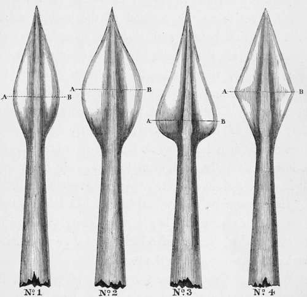

Spears, sticks, and heads
Description
This section is from the book "Hog Hunting In The East, And Other Sports", by J. T. Newall. Also available from Amazon: Hog Hunting in the East, and Other Sports.
Spears, sticks, and heads
For the purpose in view, throughout the Bombay Presidency,* a bamboo stick, of from eight to ten feet long, is in common use. On the light and tapering end of this is attached a steel spear-head, which, shank included, may be some six or eight inches in length. The latter varies in shape and size, according to the taste or experience of the hunter. The cut, No. 1, will give a general notion of the usual shapes, there being varieties intermediate between each. I present these as types of what the native smiths produce. Nos. 3 and 4 are manifestly inferior in construction to the two others for hunting purposes. The sudden rounding of the shoulder at A B in the former, and the angle in the latter, render them more liable to catch in the ribs or other bones of a pig, and necessarily more difficult to withdraw after spearing.
* Appendix, Note A.
No. 2 has this disadvantage also, but in a lesser degree. Some, however, like this shape best, as being able to give a larger wound than No. 1.
Speak-heads.
I confess that, personally, I much prefer the last mentioned ; and it is the pattern according to which I always of late years had my spear-heads manufactured in India, when in a position to get them made to order. Its advantages consist, first, in its lightness no mean consideration. Secondly, the curves from A B, both to the point and to the shank, are equally gradual. It might be made broader, but in my opinion one of its principal advantages is its narrowness. This enables it to penetrate and be withdrawn from between bones, where a broader one would get jammed. It is not so much the size as the position of the wound which tells on the boar; and with a spear-head and spear-stick of the smallest weight consistent with due strength, the hunter is much more likely to make a true and accurate thrust than with a top-heavy one. To a large and powerful man the weight may seem of little moment; yet carrying a heavy spear through a long day and many runs becomes, as I have constantly seen, even to him, very fatiguing. It is wonderful how easily a pig is completely missed by the "spearman; and when fatigue has relaxed the power of his arm this is far more likely to happen, or at best the infliction of a badly placed or superficial and ineffectual wound is the result.
Whatever form of head, however, be adopted, it should be made of good, well-tempered steel. It is better to pay well for, and take a little trouble to obtain such, than buy the iron-hoop sort of article so often foisted on the indifferent or unwary by the native lobar.
With regard to the bamboo, it should be tough, supple, and sufficiently tapering to give it a nice balance in the hand; it should also be a male. A male bamboo is that which is solid throughout, in contradistinction to the female bamboo, which is hollow. Those with the joints closest are said to be the strongest, but are, I think, at the same time the heaviest and stiffest. Under certain circumstances, the very stoutest bamboo will be shivered like a reed or broken equally with one much lighter. Still a due degree of strength is necessary, and should be required in selecting sticks. The ability to choose the best, however, from a bundle of bamboos is only to be acquired by experience and practice. One slightly crooked should not be rejected, for the lohar will render it quite straight. '
It only remains to notice the fixing on of the head. This is cemented by "lac," and it should be so attached as to leave no projecting edge. When fixed on to the bamboo, the shank end might be filed away till it is level with the stick, otherwise it is apt to catch in the pig s bones. Some slightly cut away the bamboo and thus let it in ; but this has a tendency to weaken the stick, as is found by its constantly snapping at that point.
Such is the weapon as commonly used, and to the excellence of which too little attention is usually paid. It occasionally happens, however, that a hunter may have to undertake alone the task of riding and killing a boar. The great pleasure of course lies in the competition for first-spear, and the sport is enhanced by its participation with others. But a sportsman may be travelling, or unable from some cause to enjoy the society of companions ; even then, however, though the run is divested of the charm which emulation gives, a single-handed fight with a savage old boar affords a very exciting piece of sport to the solitary hunter. He has in that case nothing but his own nerves and skill to rely on for the protection of himself and horse; and it is with a pardonable feeling of self-gratulation he can exclaim with Coriolanus, "Alone, I did it."
But, as on such occasions, he can generally choose his own time and opportunity to close with and spear the boar, and not fatigue himself with the exertion a prolonged struggle with others entails, a spear stouter, heavier, and shorter is perhaps preferable. With this a more decisive blow can be given.
With regard to the horse, on which the sportsman's success so much depends, the Arab, of from 14 hands to 14 hands 3 inches, is much preferred to larger and faster animals by men of average weight and that, owing to the climate, may be calculated at from half to a full stone less in India to what it would be in England.
Very heavy men could not be easily mounted on Arabs, and are obliged to pay the penalty of their extra weight, by trusting to animals less adapted to the exigencies of tolerably stiff Indian hunting-ground. Indian stud-bred horses, Walers by which name the South Australian horse is generally known in India— horses from Persia and Cambool, and even those of native breed, are occasionally pressed into the service of hunting humanity, and not only that of the heavier portion, but of others. Compared with the Arab, however, the other Asiatic breeds are soft-hearted, clumsy, and wanting in the blood and courage of the desertbred. "Walers are good horses, and in weight for age races concede many pounds to the Arab. But they are rather long and unwieldy for hunting over rough and broken ground, and moreover cannot stand the sun well. For these reasons an English horse is also quite out of place, and would be of as little use in most of the hunting-fields of India as an Arab in the flying countries of the " shires."
On the level plain many of the above might give the Arab the go-by; but for general use none can compare with him. The hardy, active, cat-like, scrambling qualities of a high-caste Arab, his ability to climb banks and land safely from high drops, in other words, his in-and-out qualities, the safety with which he can gallop down steep hills and over stones, his quickness to turn, his courage, docility, and other characteristics, all render him decidedly the best and most useful ally of the Hog-hunter.
It has doubtless often struck others as well as myself, that the science attending the sport of hog-hunting is apt to be overlooked, and the pursuit degenerate into a mere ambition to slay pigs, without any recognition of the woodcraft which gives it such an additional zest and attraction.
It is true there are no hounds to interest the sportsman by their acute and sagacious instincts, thoroughly developed by an admirable training. But the science of tracking by the use of man s sight, reason, and experience, is surely no mean substitute, or one devoid of interest. A knowledge, too, of the habits of the wild animal pursued; a quick eye for country; a topographical instinct by which one realises, without knowing how, the present position in or after a run; a faculty of being insensibly impressed by, and retaining the features and bearing of the country; are all qualities essential to the thorough enjoyment and success of the Eastern Hog-hunter. Many a lost pig has been recovered by the observant sportsman who rightly employs his natural gifts. A little pool of water, by many heedlessly passed by; a field or two of high grain; a patch of grass or jungle; an isolated nullah coming down from the hills or scouring the plains, may each furnish a clue, and give a chance of again coming across a pig who has eluded his pursuers, should such lie anywhere in the direction of his flight. If hunters would recognise and endeavour themselves to acquire the woodcraft, and enter into the full spirit of their employment, they would find sport graced with a greater charm, and sometimes a much greater success.
Continue to: